7 Visual Studio Code¶
7.1 Doelstellingen¶
Na dit hoofdstuk beheerst de student het volgende:
-
Chocolatey installeren op Windows 11 vanuit een PowerShell-venster met beheerdersrechten;
-
Visual Studio Code installeren met choco install;
-
Visual Studio Code een eerste keer instellen en zelf een thema kiezen;
-
controleren of je vanaf Windows met ssh kan aanmelden op serverXX;
-
uitleggen waarom je daarvoor het IP-adres gebruikt en niet de naam van de server;
-
in Visual Studio Code een SSH-host toevoegen en kiezen in welk configuratiebestand die bewaard wordt;
-
via Open a Remote Window verbinding maken met serverXX en er een map openen;
-
de extensie Container Tools installeren;
-
op de server mappen en bestanden aanmaken en bewerken vanuit Visual Studio Code;
-
in een project op de server een Containerfile en een index.html schrijven;
-
de ingebouwde terminal gebruiken om op de server een image te bouwen en een container te starten;
-
met curl controleren of je website in de container bereikbaar is.
7.2 Inleiding¶
We werken in deze volgorde:
-
de installatie van Chocolatey;
-
de installatie van Visual Studio Code via Chocolatey;
-
de eerste instellingen van Visual Studio Code;
-
een verbinding maken met serverXX via SSH;
-
werken met mappen en bestanden op de server;
-
werken met de terminal van de server vanuit Visual Studio Code.
7.3 Chocolatey installeren¶
De installatie is eenvoudig. Je vindt ze op de website van Chocolatey, bij Chocolatey Software | Installing Chocolatey.
We voeren het onderstaande uit op de host, dus op Windows 11, in een PowerShell-venster met beheerdersrechten.
PS C:\Windows\system32> Set-ExecutionPolicy Bypass -Scope Process -Force; [System.Net.ServicePointManager]::SecurityProtocol = [System.Net.ServicePointManager]::SecurityProtocol -bor 3072; iex ((New-Object System.Net.WebClient).DownloadString('https://community.chocolatey.org/install.ps1'))
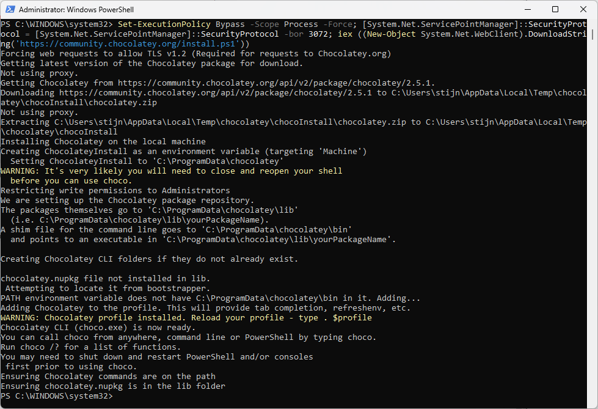
7.4 Visual Studio Code installeren¶
Voer hiervoor het onderstaande commando uit met beheerdersrechten.
PS C:\Windows\system32> choco install vscode
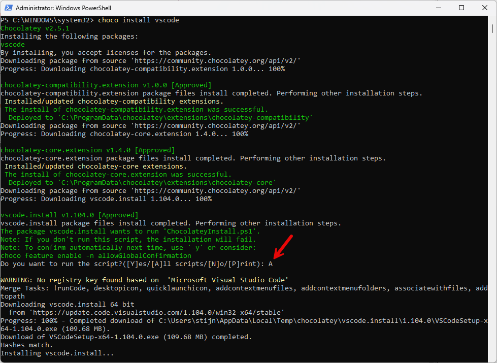
Typ A als er gevraagd wordt om het script uit te voeren.
Na enige tijd is Visual Studio Code geïnstalleerd.
7.5 Visual Studio Code voor het eerst starten¶
Start Visual Studio Code via het startmenu en kies voor Continue without Signing in.
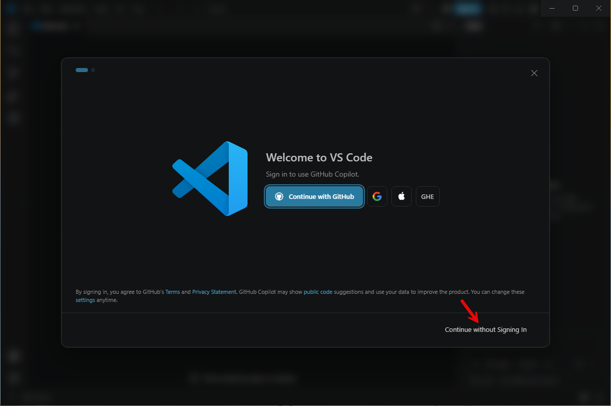
Daarna kan je je Color Theme kiezen. Zelf werk ik het liefst met een licht thema, maar dat is persoonlijke smaak. De keuze is aan jou. Kies daarna voor Get Started.
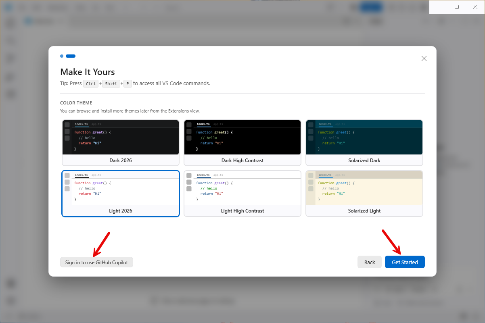
7.6 Verbinding maken via SSH¶
7.6.1 De SSH-verbinding testen¶
Voor je SSH instelt in Visual Studio Code, controleer je best eerst of je vanaf Windows kan aanmelden op je server. Gebruik daarvoor het IP-adres: de naam serverXX is op de Windows-host niet bekend. Je zou dat kunnen oplossen via het bestand hosts (C:\Windows\System32\drivers\etc\hosts), maar dat doen we hier niet.
PS C:\Users\stijn> ssh
…
Are you sure you want to continue connecting (yes/no/[fingerprint])? yes
…
student@192.168.112.100's password:
…
student@serverXX:~$
7.6.2 De SSH-host toevoegen in Visual Studio Code¶
Klik nu linksonder op het icoon Open a Remote Window.
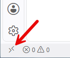
Kies nu bovenaan in de balk voor SSH.
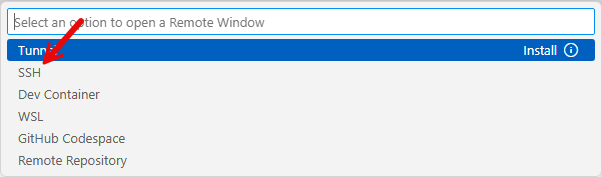
Visual Studio Code installeert nu een extensie die daarvoor nodig is.
Klik opnieuw linksonder op het icoon Open a Remote Window.
Kies nu voor Connect to Host…
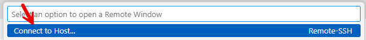
Je krijgt nu onderstaand venster. Klik op + Add New SSH Host…
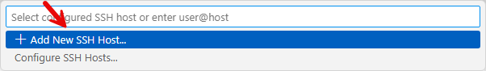
Typ nu het onderstaande en druk op Enter.
ssh student@192.168.112.100
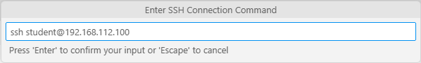
Er wordt gevraagd in welk configuratiebestand die gegevens bewaard moeten worden.
Kies je eigen configuratiebestand (C:\Users\<gebruiker>\.ssh\config) en niet het globale bestand (C:\ProgramData\ssh\ssh_config).
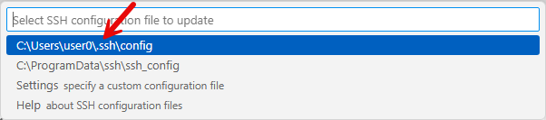
Rechtsonder zie je dat de host toegevoegd is.
Klik nu op Connect.
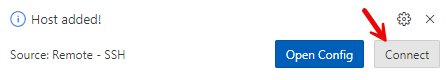
Kies Linux als platform.
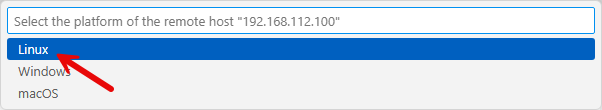
Geef het wachtwoord in.
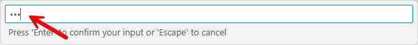
Onderaan verschijnt de melding dat je het platform later nog kan wijzigen. Dat is hier niet nodig, dus klik op Don’t Show Again.
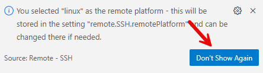
Linksonder zie je dat je via SSH verbonden bent met de server.
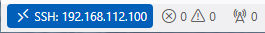
Klik nu linksboven op
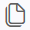
.Nu kan je een map op de server openen door op Open Folder te klikken.
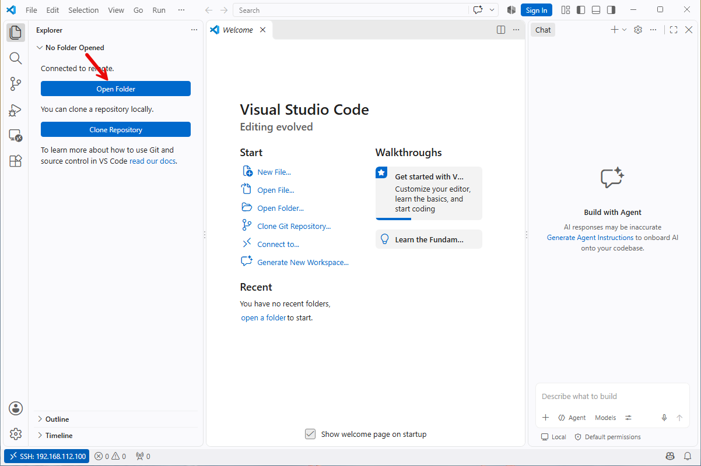
Wij kiezen de thuismap van student en klikken op OK.
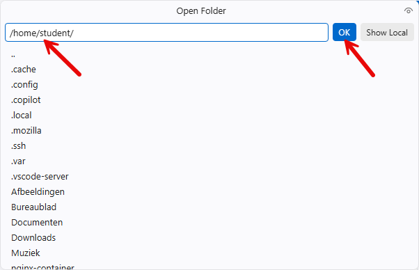
Geef aan dat je de eigenaars van de bestanden in de map vertrouwt.
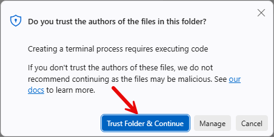
Geef opnieuw je wachtwoord in en druk op Enter.
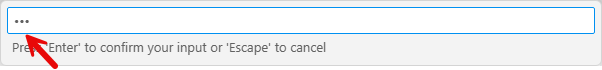
Links zie je nu de mappenstructuur van de server.
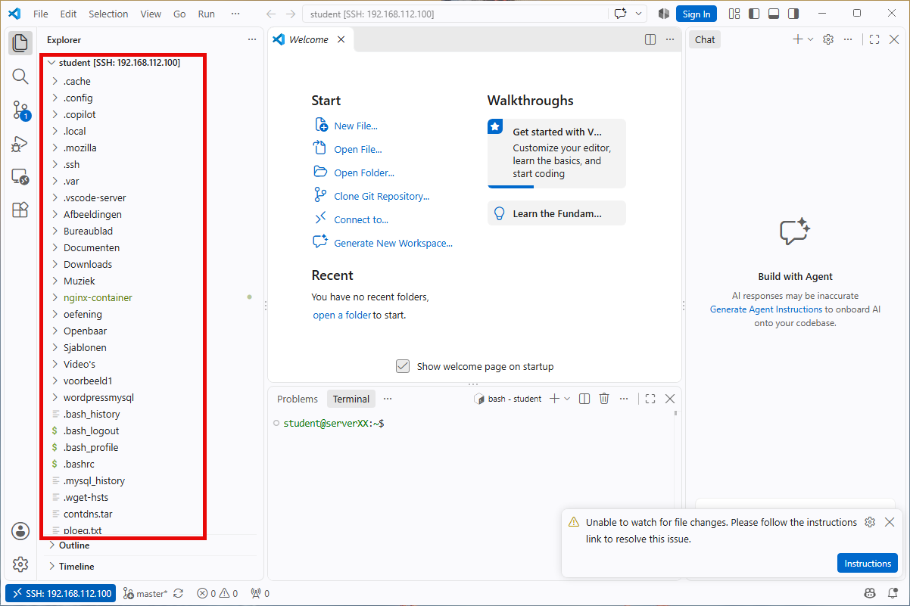
7.7 Container Tools¶
Om extensies te installeren klik je links op Extensions (
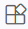
).We zoeken nu linksboven naar Container Tools.
Container Tools verschijnt in de lijst. Klik erop om er rechts meer informatie over te zien.
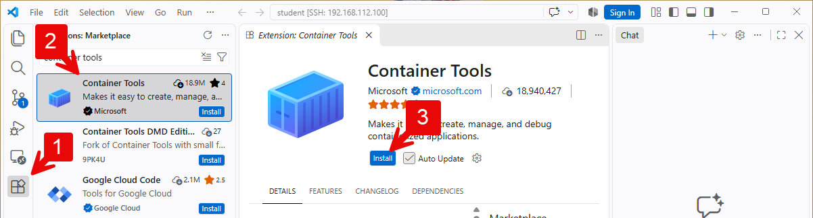
Klik op Install om de extensie te installeren.
7.8 Voorbeeld podman: bestanden en mappen aanmaken¶
Klik terug op
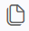
linksboven.Bovenaan kan je eenvoudig bestanden en mappen toevoegen. Let wel op waar je muisaanwijzer staat: een nieuwe map komt terecht in de map die op dat moment geselecteerd is.
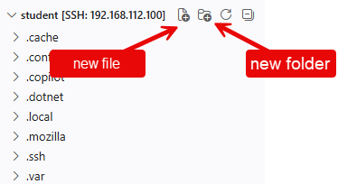
Zorg er dus voor dat je de hoofdmap geselecteerd hebt door erop te klikken.
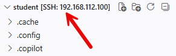
We maken de map podmanproject1 aan in de thuismap van student.
Klik hiervoor op het icoon
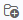
. Geef dan, in dit geval, podmanproject1 in.De map verschijnt meteen in de structuur aan de linkerkant.
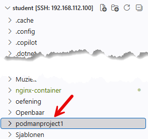
Nu maken we in podmanproject1 het bestand aan met de instructies om een image te bouwen. We geven het de naam Containerfile.
Selecteer hiervoor podmanproject1 en klik bovenaan op het icoon
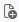
. Geef nu de naam Containerfile in en druk op Enter.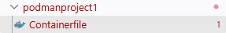
Rechts zie je nu een leeg bestand Containerfile.
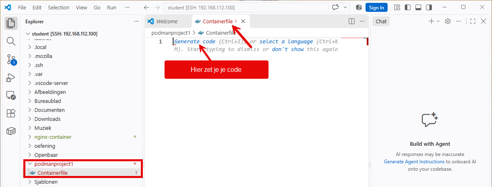
We geven dat bestand onderstaande inhoud.
FROM registry.access.redhat.com/ubi10/ubi
# Installeer httpd (Apache)
RUN dnf install -y httpd && dnf clean all
# Kopieer de website bestanden naar de document root van Apache
COPY website/index.html /var/www/html/
# Open standaard HTTP-poort
EXPOSE 80
# webserver starten
CMD ["/usr/sbin/httpd", "-DFOREGROUND"]
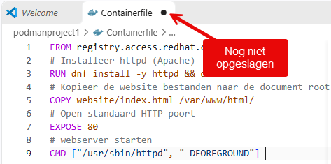
Sla het bestand op via File, Save. Je zal zien dat het bolletje is verdwenen naast de bestandsnaam.
We maken nu een webpagina index.html in een submap website. Die map komt overeen met de locatie in de regel COPY website/index.html /var/www/html/ uit je Containerfile.
Selecteer daarvoor links podmanproject1 en klik weer bovenaan op
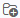
.Typ nu website en druk op Enter.
De map website staat nu uiteraard ook in je mappenstructuur.
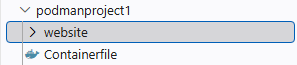
Maak hierin een nieuw bestand aan door eerst website te selecteren en te klikken op
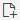
.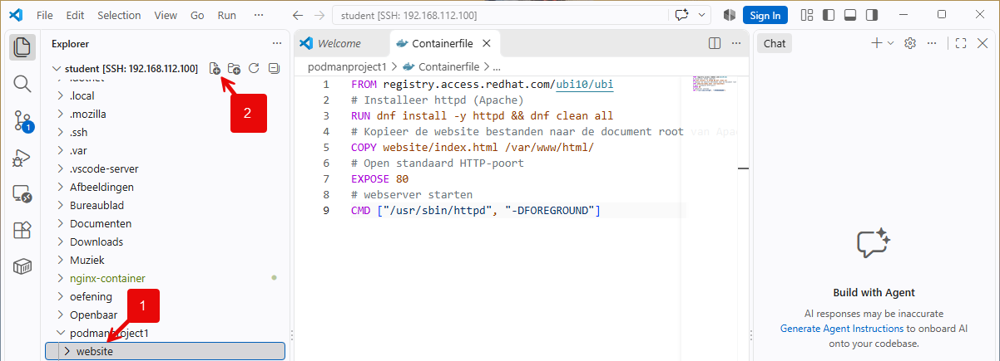
Typ als bestandsnaam index.html en druk op Enter.
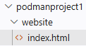
Geef het bestand index.html de volgende inhoud.
<html>
<head>
<title>Podman test</title>
</head>
<body>
<h1> Podman test</h1>
</body>
</html>
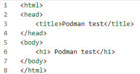
Ook dit bestand slaan we op via File, Save (Ctrl + S).
7.9 Voorbeeld podman: de terminal gebruiken¶
Klik bovenaan in de menubalk op View, Terminal.
Staat de menubalk niet volledig op het scherm, klik dan eerst op de drie puntjes.
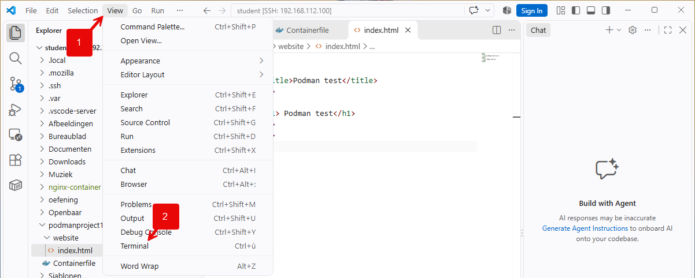
Onderaan opent een bash-shell op de server, in je thuismap.
Ga naar de map podmanproject1.
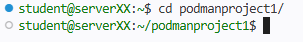
We bouwen nu het image, op de manier die je gewend bent.
student@serverXX:~/podmanproject1$ podman image build -t podmanproject1 .
Daarna starten we een container op basis van dat image.
student@serverXX:~/podmanproject1$ podman run -d --name web --hostname web -p 9000:80 podmanproject1
83086aac9e6c8193df5270255ce9cb94534c6b5ef0f6a74f3dc5c9c8d1897f89
Tot slot controleren we of de website bereikbaar is.
student@serverXX:~/podmanproject1$ curl http://127.0.0.1:9000
<html>
<head>
<title>Podman test</title>
</head>
<body>
<h1> Podman test</h1>
</body>
</html>